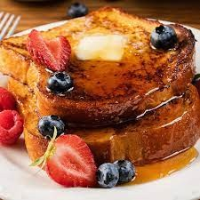

French Toast Recipe
Ingredients:

-
⅔ cup milk
-
2 large eggs
-
1 teaspoon vanilla extract (Optional)
-
¼ teaspoon ground cinnamon (Optional
-
salt to taste
-
6 thick slices bread
-
1 tablespoon unsalted butter, or more as needed
Instructions:
-
Whisk milk, eggs, vanilla, cinnamon, and salt together in a shallow bowl.
-
Lightly butter a griddle and heat over medium-high heat.
-
Dunk bread in the egg mixture, soaking both sides. Transfer to the hot skillet and cook until golden, 3 to 4 minutes per side. Serve hot.